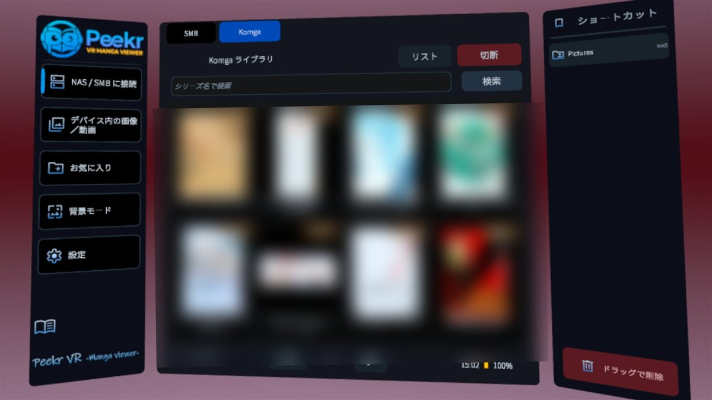

置いたまま、読む。
Leave it on the NAS.
蔵書はNASに置いたまま。Questへの転送は要りません。ネットワーク越しにそのまま読めます。
Your library stays on the NAS. Nothing to transfer to the headset — read over the network.
Komga サーバー連携：シリーズ検索（日本語入力対応）・お気に入り・読書進捗の同期・読み方向（右開き/左開き）の自動反映。
Native Komga integration: series search, favorites, reading-progress sync, and automatic reading direction (RTL/LTR) per series.
